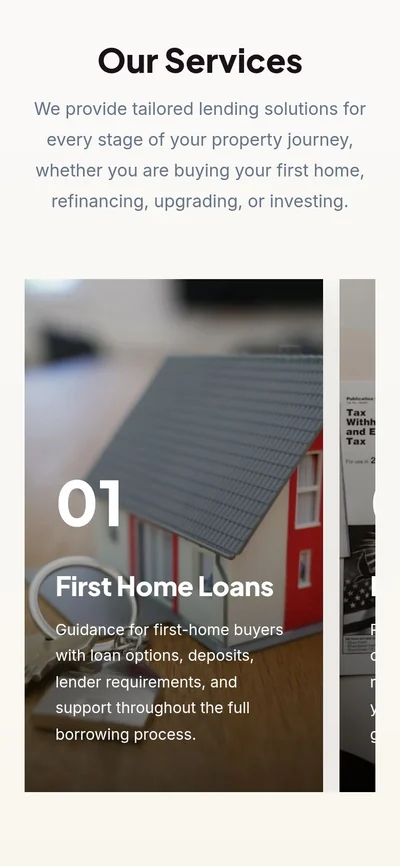

Homelend Solutions

Buying a first home is a big, nervous step, so I designed a mortgage website that explains every option in plain language and makes booking a chat feel easy.
How I helped:
- Web design
- Elementor build
- Custom CSS
- Content structure
- Lead generation
- Responsive design
- Role
- Web designer & developer
- Industry
- Mortgage broking
- Market
- Australia
- Platform
- WordPress + Elementor
- Website
- homelendsolutions.com.au ↗
The problem
Big decisions, confusing options
Mortgage websites are often walls of jargon. Homelend’s visitors are mostly first-home buyers and growing families who feel unsure about rates, loan types and what happens next.
If the website adds to that confusion, they leave and keep searching. The site had to feel like talking to a helpful local broker, not reading a bank’s fine print.
The goal
What it had to do
- Explain each loan option in plain, friendly language.
- Make Homelend feel personal and trustworthy, not like a big bank.
- Turn interest into booked consultations from any page.


How I worked
Start with the buyer’s questions
I started from the questions real buyers ask: which loan fits me, what will it cost, and who will help me? Every section of the site answers one of them.
I grouped the services into six clear paths (first home loans, refinancing, investment loans, second home loans, loan comparison and end-to-end support) so each visitor can spot their situation in seconds. Warm photography and a deep, confident brand colour do the rest.
The build
The decisions that mattered
- 01
One clear next step, everywhere
A “Book a consultation” button sits in the header, the hero and after every key section, so nobody has to hunt for it.
- 02
Six services, six simple doors
Numbered photo cards turn a long list of loan products into a quick, visual choice.
- 03
Easy for the team to update
Built in Elementor with tidy custom CSS, so the team can change text and offers without breaking the layout.
The result
A broker’s website that feels like a broker
Homelend now has a website that looks like the trusted local broker it is. Visitors can see their options at a glance and book a consultation in a couple of clicks, on any device.
“Omar listened to what we wanted and turned it into a clear website. The final result was simple and easy for clients to understand.”